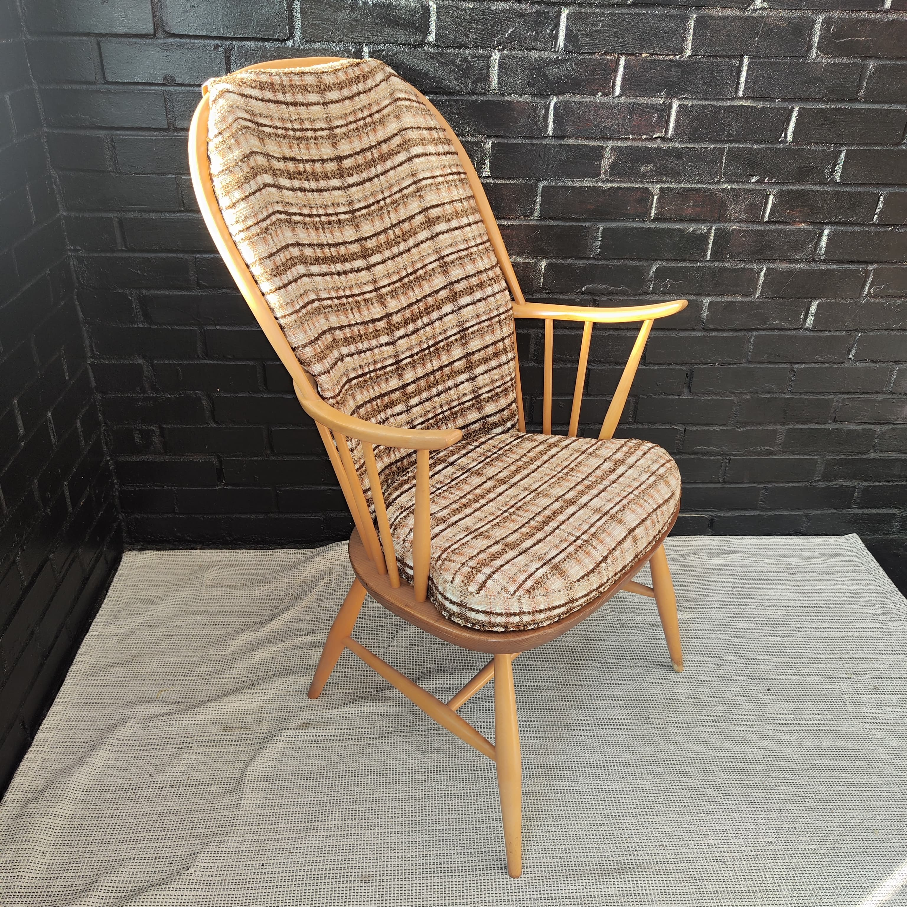
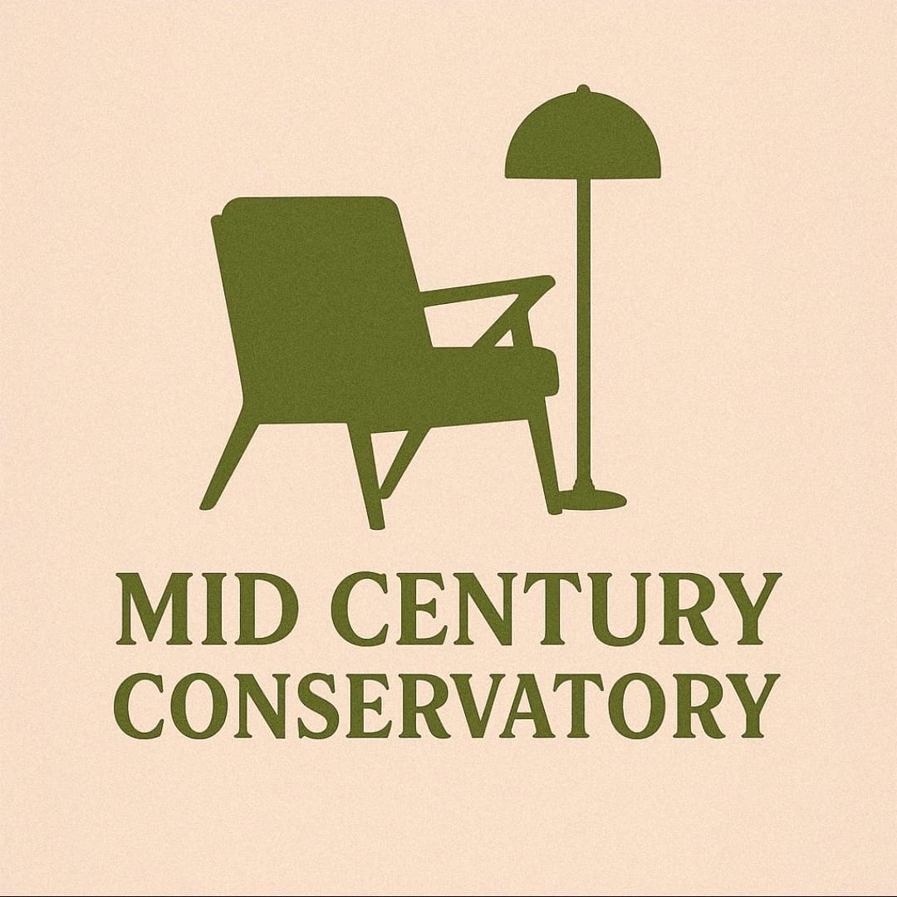
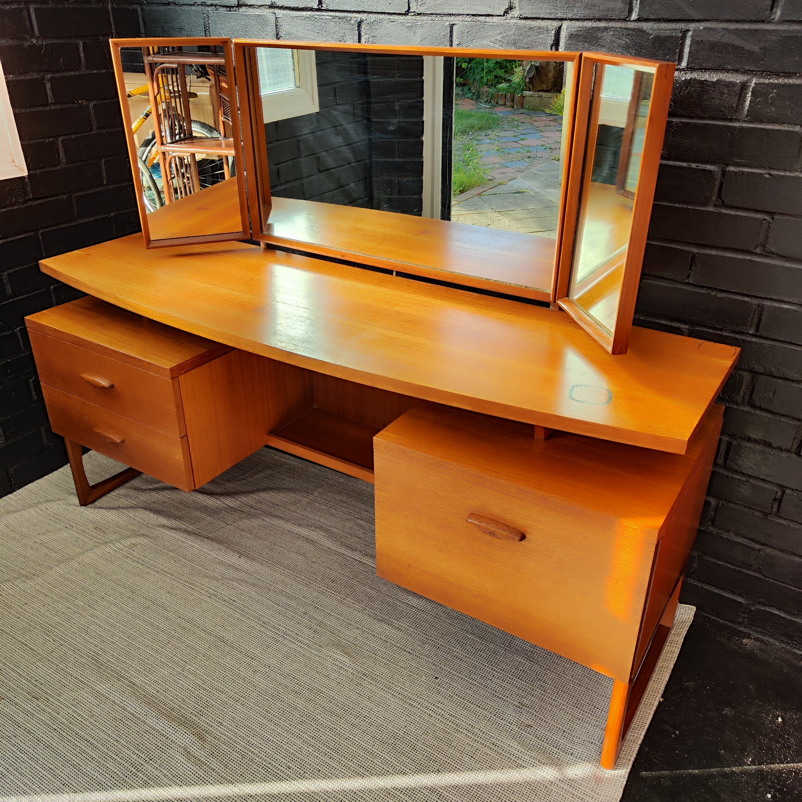
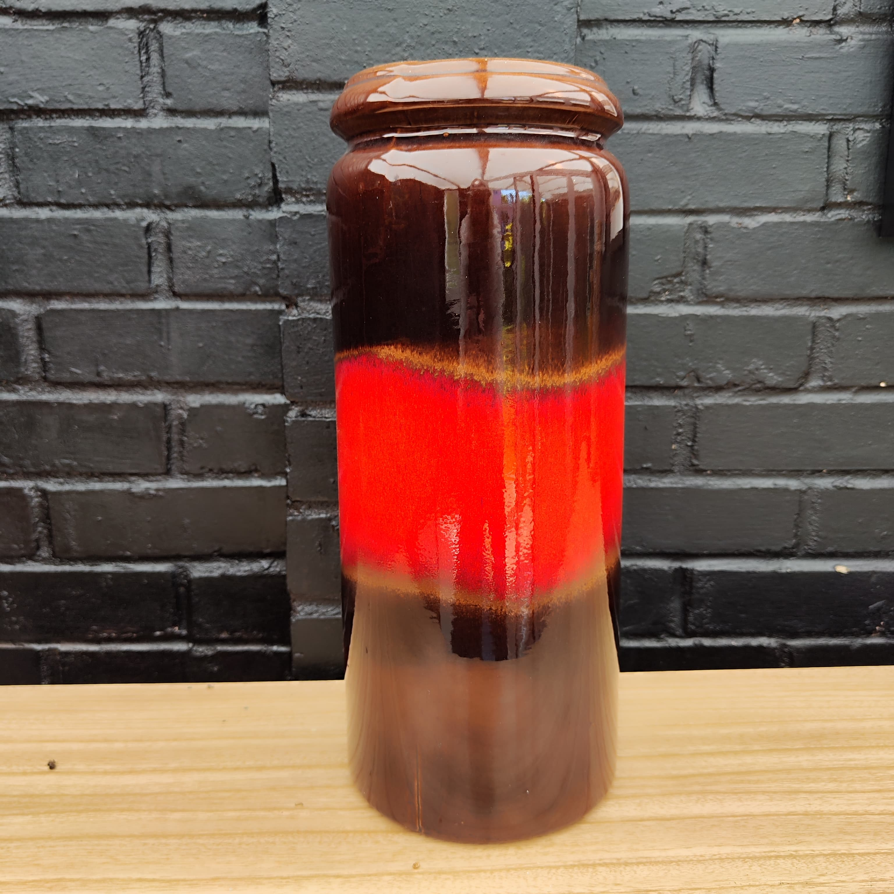

Available
Ercol-style lounge chair
Curved timber frame, high back and patterned upholstery with a warm vintage feel.
Buy on eBay
Mid Century ConservatoryMid Century Conservatory is an independent curator of authentic mid-century furniture, vintage lighting and collectible ceramics from the 1950s onwards. Every piece is hand-picked for its quality, originality and enduring design, bringing timeless character to homes.
Latest Stock
Discover our ever-changing collection of authentic mid-century furniture, lighting, ceramics and homeware. Every piece has been personally sourced from across the UK and Europe, chosen for its originality, craftsmanship and design.

Available
Curved timber frame, high back and patterned upholstery with a warm vintage feel.
Buy on eBay
Available
Teak finish, triple mirror, drawer storage and generous mid-century proportions.
Buy on eBay
Available
Gloss red and black ceramic vase with bold colour and strong display presence.
Buy on eBayWhat the site should say
Mid Century Conservatory was founded in Norwich, Norfolk, from a genuine passion for timeless design and the stories behind the objects we live with. What began as a personal interest in mid-century furniture has grown into a carefully curated collection of authentic vintage pieces sourced from across the UK and Europe.
With a particular appreciation for Scandinavian design, British makers such as G Plan, Ercol and Nathan, alongside West German ceramics, rare Hungarian Tófej pottery and Soviet-era design, we're always searching for pieces that stand apart. Inspired by Bauhaus, Brutalism and the warmth of mid-century interiors, every item is personally chosen for its craftsmanship, originality and lasting character.
Our collection is constantly evolving as we continue to source distinctive vintage furniture, lighting and ceramics from across the UK and Europe. We look for pieces that stand out — whether through their design, history, craftsmanship or sheer individuality — creating a collection that's as unique as the homes they go into.
Enquiries
Ask about availability, dimensions, condition, collection from Norwich or delivery options, or follow the eBay links to purchase current listings.